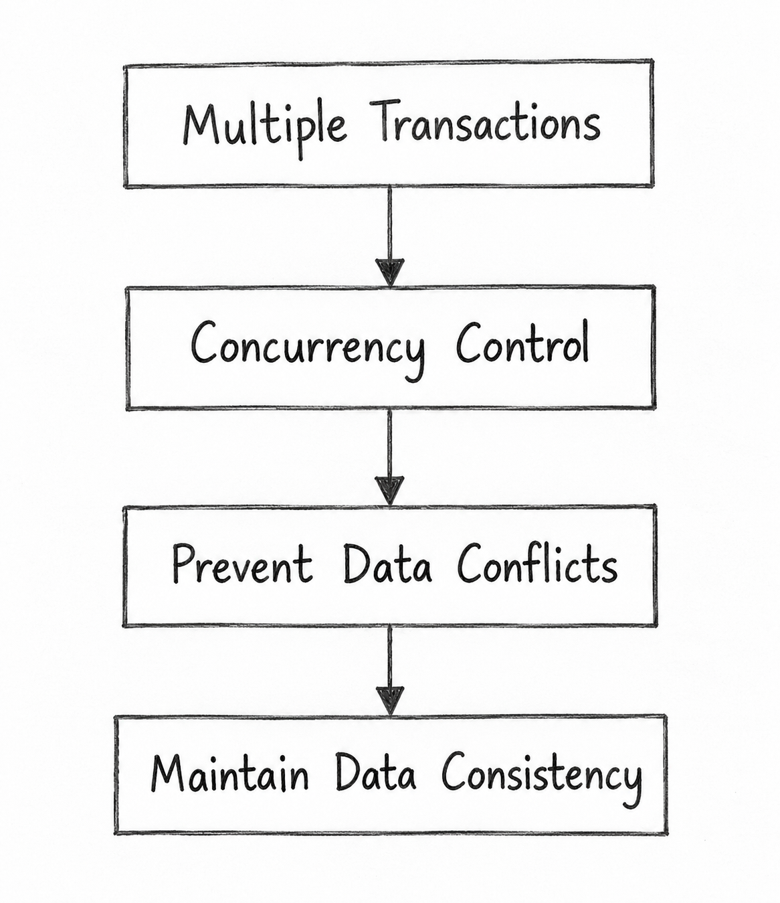

Q26. Extend Concurrency Control and the Need for It in a Multi-User Database Environment.
1. Concurrency Control
Concurrency Control is a method used in DBMS to manage multiple transactions accessing the same database at the same time.
It prevents conflicts between transactions and maintains data consistency and accuracy.

2. Need for Concurrency Control
In a multi-user database, many users may read or update the same data simultaneously.
Concurrency control is needed to prevent the following problems:
a) Lost Update
When two transactions update the same data, one transaction's changes may overwrite the other's changes.
b) Dirty Read
A transaction reads changes made by another transaction before they are committed.
c) Unrepeatable Read
A transaction reads the same data twice but gets different values because another transaction updated it.
3. Methods of Concurrency Control
a) Lock-Based Protocol
Uses shared and exclusive locks to control access to data.
b) Two-Phase Locking (2PL)
Transactions acquire locks in the growing phase and release locks in the shrinking phase.
c) Timestamp Ordering
Uses timestamps to control the order of transactions.
4. Example
Suppose a bank account has ₹10,000.
Two users withdraw money at the same time:
- T1: Withdraws ₹2,000.
- T2: Withdraws ₹3,000.
Without concurrency control, one update may overwrite the other.
With concurrency control, both withdrawals are handled correctly, and the final balance is ₹5,000.
5. Importance of Concurrency Control
- Supports Multiple Users: Allows users to access the database simultaneously.
- Ensures Isolation: Prevents transactions from interfering with each other's incomplete changes.